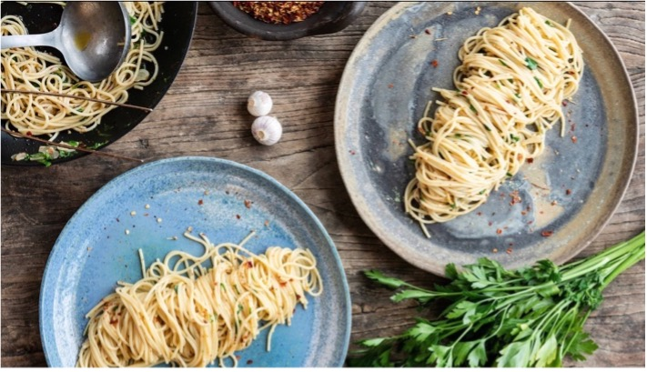

Billige opskrifter: "Sundt og Lækkert på SU"
Drømmer du om at spise lækkert, men uden at sprænge budgettet?
Med vores udvalg af billige opskrifter kan du lave velsmagende måltider uden at bruge en formue. Et godt sted at starte er med madopskrifter med kylling, som er både alsidige og budgetvenlige. Kylling kan bruges i alt fra salater til gryderetter og vil sikre, at du får en mættende og næringsrig kost.
Prøv for eksempel en kylling- og grøntsagswok eller en simpel kyllingesalat med billige ingredienser. Med madopskrifter med kylling kan du hurtigt sammensætte sunde og smagfulde retter, der passer til ethvert måltid.
Tag et kig på vores opskrifter med kylling, og gør dine indkøb smartere næste gang, du handler!

Nemme opskrifter: "Start Simpelt, Spis Godt"
Er du ny i køkkenet og vil gerne lære at lave god mad uden besvær?
Vi har samlet en række madopskrifter for begyndere, der gør det let at komme i gang med madlavning. Disse opskrifter kræver kun få ingredienser og tager ingen tid at lave, så du kan fokusere på studierne – og stadig spise godt!
Fra nemme pastaretter til hurtige ovnretter – vores madopskrifter for begyndere er perfekte, hvis du har en travl hverdag, men stadig vil spise hjemmelavet mad. Du behøver ikke være en erfaren kok for at lave et godt måltid.
Prøv vores simple opskrifter for begyndere, og få succes i køkkenet fra dag ét!
Plantebaseret protein: "Grøn Mad, Store Muskler"
Leder du efter alternativer til kød, men vil stadig sikre, at du får nok protein?
Med madopskrifter uden kød kan du nemt lave plantebaserede måltider, der både er nærende og fyldt med protein. Bælgfrugter, tofu, og linser er fantastiske proteinkilder, der kan erstatte kød i mange retter.
Prøv en lækker linsegryde eller en fyldig salat med tofu – disse madopskrifter uden kød giver dig alt, hvad du har brug for, uden at gå på kompromis med smagen. Og det bedste af det hele? De er både billige og bæredygtige.
Udforsk vores udvalg af plantebaserede opskrifter, og bliv mæt på en grønnere måde!